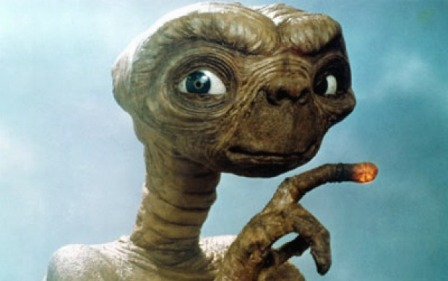
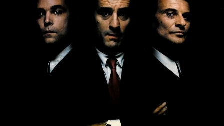
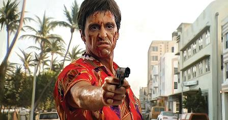

Horror

Horror Films are unsettling films designed to frighten and panic, cause dread and alarm, and to invoke our hidden worst fears, often in a terrifying, shocking finale, while captivating and entertaining us at the same time in a cathartic experience. Horror films effectively center on the dark side of life, the forbidden, and strange and alarming events. They deal with our most primal nature and its fears: our nightmares, our vulnerability, our alienation, our revulsions, our terror of the unknown, our fear of death and dismemberment, loss of identity, or fear of sexuality.
Whatever dark, primitive, and revolting traits that simultaneously attract and repel us are featured in the horror genre. Horror films are often combined with science fiction when the menace or monster is related to a corruption of technology, or when Earth is threatened by aliens. The fantasy and supernatural film genres are not synonymous with the horror genre, although thriller films may have some relation when they focus on the revolting and horrible acts of the killer/madman. Horror films are also known as chillers, scary movies, spookfests, and the macabre.
Science Fiction
Science Fiction Films are usually scientific, visionary, comic-strip-like, and imaginative, and usually visualized through fanciful, imaginative settings, expert film production design, advanced technology gadgets (i.e., robots and spaceships), scientific developments, or by fantastic special effects. Sci-fi films are complete with heroes, distant planets, impossible quests, improbable settings, fantastic places, great dark and shadowy villains, futuristic technology and gizmos, and unknown and inexplicable forces. Many other SF films feature time travels or fantastic journeys, and are set either on Earth, into outer space, or (most often) into the future time. Quite a few examples of science-fiction cinema owe their origins to writers Jules Verne and H.G. Wells.
Crime / Gangster
Crime and Gangster Films are developed around the sinister actions of criminals or gangsters, particularly bankrobbers, underworld figures, or ruthless hoodlums who operate outside the law, stealing and violently murdering their way through life. In the 1940s, a new type of crime thriller emerged, more dark and cynical - see the section on film-noir for further examples of crime films. Criminal and gangster films are often categorized as post-war film noir or detective-mystery films - because of underlying similarities between these cinematic forms. Crime films encompass or cross over many levels, and may include at least these different types of films: the gangster film, the detective (or who-dun-it) film, the crime comedy, the suspense-thriller, and the police (procedural) film.
Crime stories in this genre often highlight the life of a crime figure or a crime's victim(s). Or they glorify the rise and fall of a particular criminal(s), gang, bank robber, murderer or lawbreakers in personal power struggles or conflict with law and order figures, an underling or competitive colleague, or a rival gang. Headline-grabbing situations, real-life gangsters, or crime reports have often been used in crime films. Gangster/crime films are usually set in large, crowded cities, to provide a view of the secret world of the criminal: dark nightclubs or streets with lurid neon signs, fast cars, piles of cash, sleazy bars, contraband, seedy living quarters or rooming houses. Exotic locales for crimes often add an element of adventure and wealth. Writers dreamed up appropriate gangland jargon for the tales, such as "tommy guns" or "molls."
Film gangsters are usually materialistic, street-smart, immoral, meglo-maniacal, and self-destructive. Rivalry with other criminals in gangster warfare is often a significant plot characteristic. Crime plots also include questions such as how the criminal will be apprehended by police, private eyes, special agents or lawful authorities, or mysteries such as who stole the valued object. They rise to power with a tough cruel facade while showing an ambitious desire for success and recognition, but underneath they can express sensitivity and gentleness.
Gangster films are often morality tales: Horatio Alger or 'pursuit of the American Dream' success stories turned upside down in which criminals live in an inverted dream world of success and wealth. Often from poor immigrant families, gangster characters often fall prey to crime in the pursuit of wealth, status, and material possessions (clothes and cars), because all other "normal" avenues to the top are unavailable to them. Although they are doomed to failure and inevitable death (usually violent), criminals are sometimes portrayed as the victims of circumstance, because the stories are told from their point of view.